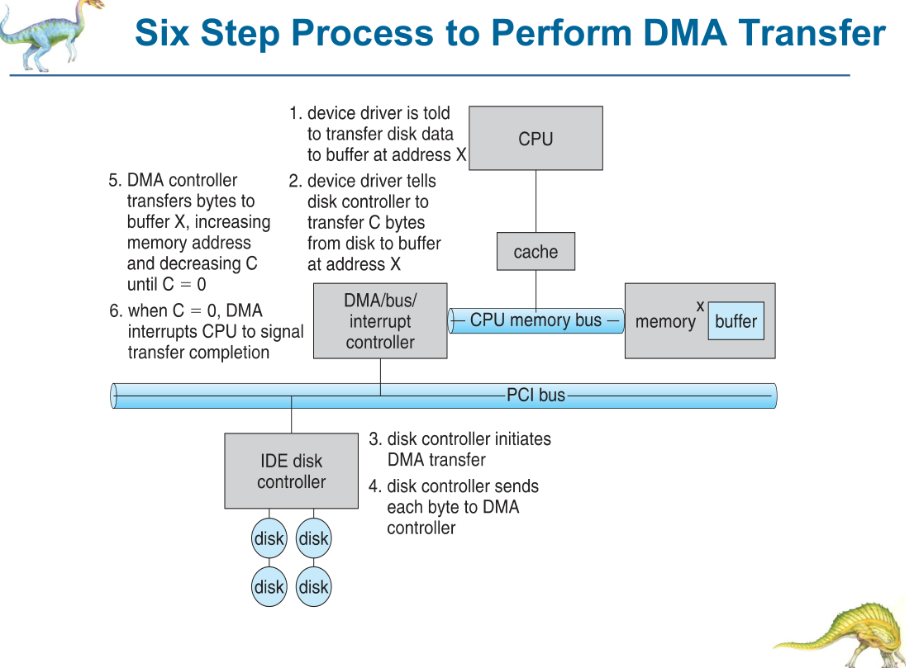
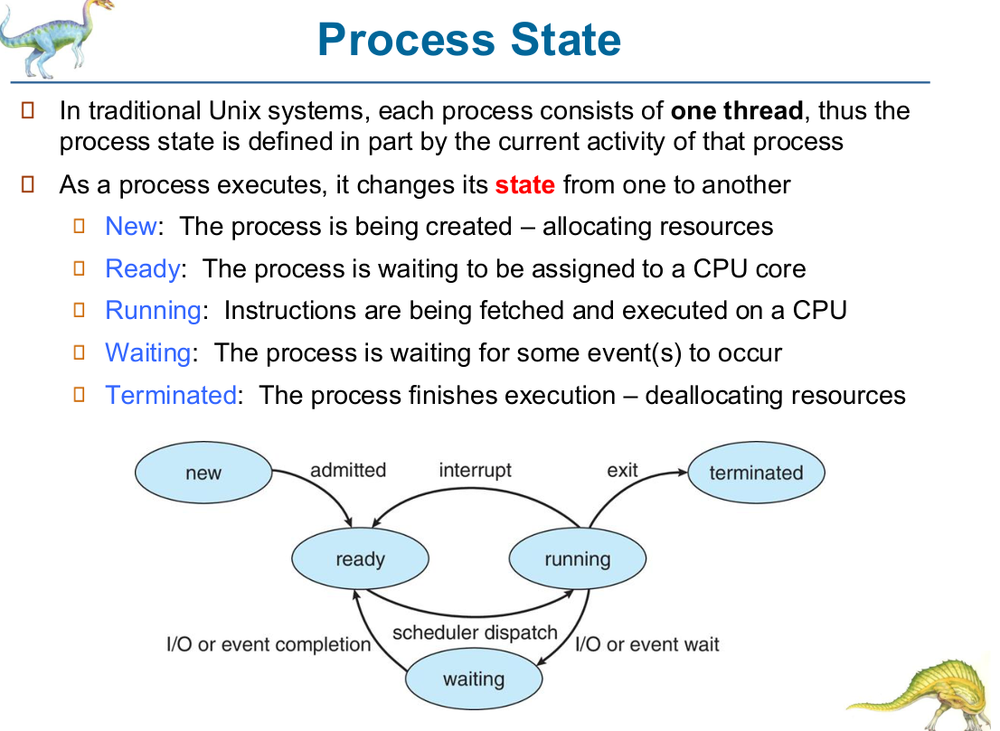
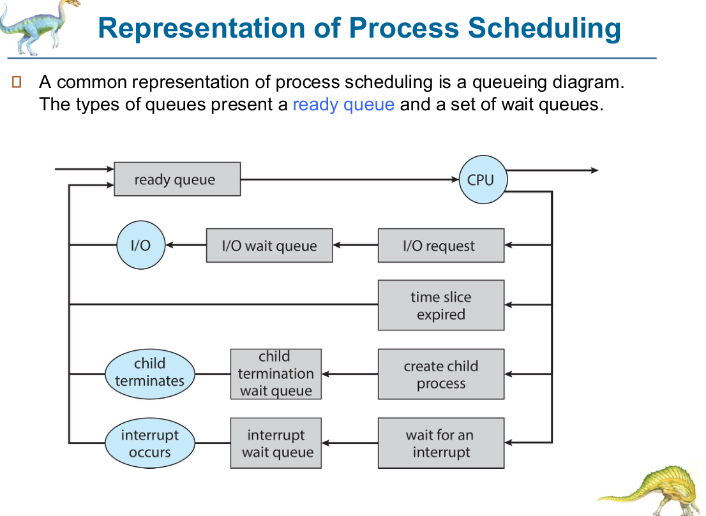

Chapter 3 — Processes（進程 / 行程）
📌 考試範圍提示：Ch3 係分數最多嘅章節之一。必考：
- fork() 計數 / process tree / possible outputs（每年 2–3 題，8–13 分一題）
- fork + exec + wait 成功/失敗情況、pipe / dup 填空（S26 Q3.3）
- MC：process state、PCB、context switch、schedulers、zombie/orphan、pipes（ordinary vs named）、interrupt、DMA、dual mode ⚠️ 今個 term interrupt / DMA / dual-mode 喺 Ch3 slides（3.21–3.31）。
#0. Computer-System Operation：I/O、Interrupt、DMA、Dual Mode [3.21–3.31]
#0.1 I/O 基本運作 [3.21]
- I/O devices and the CPU execute concurrently and asynchronously.
- Each device controller is in charge of a particular device type and has a local buffer.
- Device controller moves data between the peripheral devices and its local buffer storage.（I/O = device ↔ controller local buffer）
- CPU moves data from/to main memory to/from local buffers（typically for slow devices: keyboard, mouse）。
- Device controller informs the CPU that it has finished an operation by causing an interrupt.
- Input device：data available in local buffer；Output device：I/O operation completed。
#0.2 Interrupts ⭐⭐ [3.22–3.24]
- An I/O device may trigger an interrupt by sending a signal to the CPU（經 interrupt-request line）。CPU handles the interrupt and then returns to the interrupted instruction。
- Interrupts are widely used to handle asynchronous events — device controllers and hardware faults.
- Interrupt transfers control to an interrupt service routine (ISR) or interrupt handler — part of kernel code.
- Interrupt vector（summary）：a table/array holding the addresses of the interrupt handlers；每個 interrupt 有 unique interrupt number 作為 index。
- 運作（summary）：CPU 每執行完一條 instruction 就 sense interrupt-request line → 有 signal → 讀 interrupt number → 用佢做 index 入 interrupt vector → jump 去 handler。
- 兩條 interrupt request lines（summary）：
- Nonmaskable interrupt — reserved for events like unrecoverable memory errors, power failure
- Maskable interrupt — can be turned off by the CPU before executing critical instruction sequences；device controllers 用（可以 delay）
- Interrupt priority levels ⭐ — a high-priority interrupt can preempt the execution of a low-priority interrupt；CPU 可以 defer low-priority interrupts 而唔使 mask 全部。
- Lab 2 補充：a trap (software interrupt) is given a relatively LOW interrupt priority compared with device interrupts；multi-CPU systems can process interrupts concurrently。
- A trap or exception is a software-generated interrupt caused either by an error (e.g., arithmetic error / divide by zero) or a user request (a system call). ⭐
- All modern operating systems are interrupt-driven；每秒幾百個 interrupts。
⚠️ MC 陷阱：
- S26 MC1 ✗「All interrupts are serviced in exactly the same way, with no difference in priority」（有 priority levels）
- HW1 MC2 ✗「Interrupts can only be generated by I/O devices」（software trap/exception 都係）；✅ hardware interrupts asynchronous；✅ trap caused by error or system call；✅ different priority levels
- F20 MC3 ✗「Interrupt allows software to access hardware including the CPU」（嗰個係 system call 嘅作用）
- Sp21 MC2：直接 trigger interrupt 嘅 event → I/O job completion
#0.3 DMA (Direct Memory Access) ⭐⭐ [3.25–3.26]
- Programmed I/O — CPU runs special I/O instructions to move one byte at a time between memory and slow devices（keyboard, mouse）。
- DMA — for fast devices and large amounts of data：DMA controller bypasses the CPU to transfer data between I/O device and memory directly；CPU/OS 只係 initialize DMA controller。→ relieves the CPU from slow data movement。
- 步驟：OS writes DMA command block into memory（source and destination addresses, read or write mode, number of bytes）→ writes location of command block to DMA controller → bus mastering（DMA controller grabs bus from CPU — momentarily prevents the CPU from accessing main memory, Lab 2）→ when done, sends an interrupt to the CPU to signal completion。
- Six-step DMA transfer [3.26]：
- Device driver is told to transfer disk data to buffer at address X
- Device driver tells disk controller to transfer C bytes from disk to buffer at address X
- Disk controller initiates DMA transfer
- Disk controller sends each byte to DMA controller
- DMA controller transfers bytes to buffer X, increasing memory address and decreasing C until C = 0
- When C = 0, DMA interrupts CPU to signal transfer completion

⚠️ MC 陷阱：
- HW1 MC1 ✗「DMA controller sends an interrupt after every byte」→ 只係 block 完成後 interrupt 一次
- S26 MC2 ✅「DMA allows data transfer between device and memory with less CPU involvement」
- ✗「DMA eliminates interrupts completely」；✗「CPU and DMA can't execute concurrently」；✗「DMA for slow devices, CPU for fast devices」（相反）
#0.4 Dual-mode Operation ⭐⭐ [3.27–3.31]
- Dual-mode operation allows the OS to protect itself and other system components.
- User mode vs kernel mode（亦叫 supervisor / system / privileged mode）— distinguish execution of OS code and user code。
- Provides the basic means of protecting the OS from errant users, and errant users from one another.
- Mode bit provided by hardware：user mode = 1，kernel mode = 0. ⭐
- Privileged instructions — can only be executed in kernel mode，例：I/O control, timer management, interrupt management（summary：set timer value, clear memory, disable interrupts, modify device-status table, access I/O devices）。
- If a privileged instruction is attempted in user mode, the hardware treats it as illegal and traps it to the OS.（HW1 MC7 答案 A）
- Beyond two modes：Intel — four protection rings（ring 0 = kernel, ring 3 = user；rings 1, 2 rarely used）；ARMv8 — seven modes；CPUs supporting virtualization have a separate VMM mode（more privileges than user, fewer than kernel）。VMM 做 machine switch（save entire machine state 包括 privileged hardware state）。
- Initial control in kernel mode → set to user mode when giving control to user app → back to kernel via interrupt, trap, or system call.
- Timer — ensures a user program always returns control to the OS（防止 infinite loop 霸住 CPU）；設定 timer 係 privileged。
- System call：user mode → kernel mode to fulfil request；return from system call resets it to user mode。
#0.5 Three Types of Mode Transfer（user → kernel）⭐ [3.31]
| Type | 性質 | 例子 |
|---|---|---|
| System call | user process requests a service from OS；"like a function call but outside the user process" | exit(), write(), read() |
| Interrupt | external, asynchronous events；independent of user process | timer, I/O completion |
| Trap / Exception | internal, synchronous events in the process | protection violation (segmentation fault), divide by zero |
#1. Process Concept（進程概念）[3.4–3.8]
#1.1 Four Fundamental OS Concepts [3.4]
- Process — an instance of an executing program；consists of an address space and one or more threads of control。
- Thread — a single unique execution context；fully describes program state — program counter, registers, execution flags, stack。
- Address space — program 喺自己嘅 address space 執行，distinct from other programs'（logical/virtual address，Ch9–10）。
- Dual-mode operation — basic protection（見 §0.4）。
#1.2 Process 嘅組成部分 [3.5] ⭐
- Text section — the program code
- Current activity — program counter, processor registers
- Stack — temporary data when invoking functions: function parameters, return addresses, local variables ⭐（Sp21 MC 答案：stack）
- Data section — global variables
- Heap — memory dynamically allocated during run time（
malloc()/free()） - Program = passive entity（executable file on disk）；Process = active entity（有 PC 指住下一條 instruction + associated resources）。
- A program becomes a process when an executable file is loaded into memory（double-click icon / shell command）。
- One program can be executed by multiple processes.
- A process can be an execution environment for other programs（例：JVM 執行 Java program）。
#1.3 Loading a program into memory [3.7]
- Load code and static data（initialized variables）into the address space
- Allocate the runtime stack；fill in
main()parameters argc, argv - Allocate heap（
malloc()/free()） - Other initialization (I/O) — UNIX：每個 process 預設有 three open file descriptors: stdin (0), stdout (1), stderr (2) ⭐
#1.4 Memory Layout of a C Program [3.8]
high address ┌──────────────────────┐
│ argc, argv │ (separate section for main() params)
├──────────────────────┤
│ stack ↓ │ local vars, params, return addr
│ │
│ heap ↑ │ malloc()
├──────────────────────┤
│ uninitialized data │ (bss) ┐ global data
│ initialized data │ ┘
├──────────────────────┤
low address │ text (code) │
└──────────────────────┘
- Global data section is divided into (1) initialized data and (2) uninitialized data.
#2. Process State（進程狀態）⭐⭐ [3.9]
| State | 意思 |
|---|---|
| New | process is being created — allocating resources |
| Ready | waiting to be assigned to a CPU core |
| Running | instructions are being executed on a CPU |
| Waiting | waiting for some event(s) to occur（I/O completion, signal） |
| Terminated | finished execution — deallocating resources |
new --admitted--> ready <--interrupt-- running --exit--> terminated
| ----scheduler dispatch----> |
^ v
+--I/O or event completion-- waiting <--I/O or event wait--+
轉換（F19 Q2.1 答案）：
- New → Ready：admitted
- Ready → Running：scheduler dispatch（CPU scheduling）
- Running → Ready：interrupt（e.g. timer / time slice expired / preempted）
- Running → Waiting：I/O or event wait
- Waiting → Ready：I/O or event completion
- Running → Terminated：exit

📝 HW1 Q2.3：admitted → dispatched → disk I/O → I/O completes → timer interrupt → dispatched → exits New → Ready → Running → Waiting → Ready → Running → Ready → Running → Terminated 離開 Running 時 OS 喺 PCB 記錄：process state, program counter, CPU registers（context），以及更新 scheduling info、accounting info（CPU time used）、I/O status（e.g. pending I/O request）。
⚠️ 注意：Waiting → Running 係冇嘅（要先返 Ready）；Ready → Waiting 亦冇。 S26 MC14：令 process 離開 running state 嘅 event → It issues an I/O request（call function / 加 local variable / read cache 都唔會）。 Sp21 MC6：might force a process to leave the CPU → all of the above（fork system call、I/O request、interrupt）。
#3. Process Control Block (PCB) ⭐ [3.10, 3.13]
PCB（又叫 task control block）= information associated with each process（kernel data structure）：
| Field | 內容 |
|---|---|
| Process state | running, waiting, etc. |
| Program counter | location of the next instruction to execute |
| CPU registers | accumulators, index registers, stack pointers, general-purpose registers, condition codes |
| CPU-scheduling information | priorities, pointers to scheduling queues, scheduling parameters |
| Memory-management information | memory allocated（page tables / segment tables） |
| Accounting information | CPU used, clock time elapsed, time limits |
| I/O status information | I/O devices allocated, list of open files |
- 每個 process 有 unique PID (process identifier)（UNIX/Linux 係 positive integer；PID 1 = init / systemd，root process）。
- Process table / process list — kernel data structure keeping track of all processes（indexed by PID, pointing to PCBs）。
- Linux [3.13]：task list = circular doubly linked list of
struct task_struct（process descriptor = PCB）：pid_t pid; long state; unsigned int time_slice; struct task_struct *parent; struct list_head children; struct files_struct *files; struct mm_struct *mm;
#4. Threads（簡介，詳見 Ch4）[3.11–3.12]
- A thread is represented by a program counter, registers, execution flags, and a stack — part of a process.
- 一個 thread 喺 CPU 執行 = 佢嘅 state 喺 CPU hardware registers。
- Multiple threads of a process run within the same address space (share code, data, files); each thread has its own thread state.（multicore 上可以 parallel）
- 例：web browser 一個 thread display、一個 thread 由 network 拎 data。
- 傳統 process（single thread）= heavy-weight process。
#5. Process Scheduling（進程排程）⭐ [3.14–3.18]
#5.1 基本
- Objective of multiprogramming：have some process running at all times to maximize CPU utilization.
- Process scheduler — selects an available process (in memory) for execution on a CPU core。
- Single CPU core → never more than one process running at a time.
- Degree of multiprogramming = number of processes currently residing in memory. ⭐（Sp21 MC）
- I/O-bound process — more time doing I/O；many short CPU bursts。
- CPU-bound process — infrequent I/O；few very long CPU bursts。
#5.2 Scheduling Queues [3.15–3.16]
- Ready queue — processes in main memory, ready and waiting to execute
- Wait queues — processes waiting for an event（e.g. I/O completion）
- Processes migrate among the various queues during their lifetime.
- Queueing diagram [3.16]：ready queue → CPU → 出口有：I/O request（→ I/O wait queue → I/O → ready）、time slice expired（→ ready）、create child process（→ child termination wait queue）、wait for an interrupt（→ interrupt wait queue → interrupt occurs → ready）。

- Summary：the state of a process can be determined by which queue it resides on（running 嗰個例外）。
#5.3 Schedulers ⭐⭐ [3.17–3.18]
| Scheduler | 又叫 | 做咩 | 頻率 |
|---|---|---|---|
| Long-term scheduler | job scheduler | selects which processes should be brought into memory（from job queue, after resource allocation）；dictates the degree of multiprogramming；aims for a good process mix of I/O-bound and CPU-bound；mainframes/minicomputers 用，PC 冇 | very infrequent（seconds, minutes）→ may be slow |
| Short-term scheduler | CPU scheduler | selects a process from the ready queue to execute next and allocates a CPU core | very frequent（milliseconds）→ must be fast |
| Medium-term scheduler | — | reduces degree of multiprogramming — removes a process from memory, stores it on disk, brings it back later = swapping（swap space） | 需要時 |
- F20 MC10：「___ swaps a process out of memory and temporarily stores it on disk」→ medium-term scheduler。
- Sp21 MC：「selects from the ready queue to execute on the CPU」→ short-term scheduler。
#6. Context Switch（上下文切換）⭐⭐ [3.19–3.20]
- When the CPU switches to another process, the OS must save the state of the old process and load the saved state of the new process via a context switch.
- Context of a process is represented in the PCB（or thread）：registers, program counter, stack pointer。
- Context-switch time is pure overhead — the system does no useful work while switching.
- The more complex the OS and the PCB, the longer the context switch.
- 速度取決於 memory speed, number of registers to copy, special instructions (load/store all registers) → highly dependent on hardware。
- Some processors provide multiple sets of registers（SUN UltraSPARC）→ context switch = changing a pointer to another register set.
⚠️ S26 MC11 ✅「During context switch, OS saves the state of one process/thread and restores another」。 ✗「Context switch means switching from user mode to kernel mode」（嗰個係 mode switch，唔係 context switch） ✗「requires same hardware on all architectures」；✗「shorter if OS is more complex」
#7. Process Creation（建立進程）⭐⭐⭐ [3.32–3.46]
#7.1 概念
- Parent process creates child processes → tree of processes. 每個 process 有 unique pid。
- Linux tree [3.33]：
systemd (pid 1)有三個 children：logind (8415)、python (2808)、sshd (3028)；logind→bash (8416)→ps (9298)、vim (9204)；sshd (3028)→sshd (3610)→tcsh (4005)。 - Child 需要 resources（CPU time, memory, files, I/O devices）；parent 可傳 initialization data。
- Resource sharing 三種選擇 [3.34]：
- Parent and children share (almost) all resources —
fork() - Children share a subset of parent's resources —
clone()（Ch4） - Parent and child share no resources
- Parent and children share (almost) all resources —
- Execution 兩種選擇：
- Parent continues to execute concurrently with its children（例：
a.out &） - Parent waits until some or all of its children have terminated（例：shell 等
a.out完成）
- Parent continues to execute concurrently with its children（例：
- Address space 兩種選擇 [3.35]：
- Child is a duplicate of the parent (same program and data) — UNIX/Linux
fork() - Child has a new program loaded into it —
exec()
- Child is a duplicate of the parent (same program and data) — UNIX/Linux
#7.2 fork() ⭐⭐⭐ [3.35–3.39]
fork()creates a new process that duplicates the entire address space of the parent. Both processes continue execution at the instruction afterfork().- Return value（each process receives exactly one return value）[3.36–3.37]：
| Return value | 喺邊個 process | 意思 |
|---|---|---|
| > 0 | parent | 值 = PID of the newly created child |
| = 0 | child | 新建嘅 child |
| < 0（−1） | parent (original) | fork failed，no child created，errno set |
- All state of the parent is duplicated in the child：memory (program, data), file descriptors…；每個 process 有自己一份 program 同 data（time consuming）。
- Steps to implement fork() [3.38]：
- Create and initialize the PCB in the kernel
- Create a new address space（allocate memory）
- Initialize the address space with a copy of the parent's entire address space（time consuming）
- Inherit the execution context of the parent（e.g. open files）
- Inform the CPU scheduler that the child is ready to run
- Parent vs Child after fork() [3.39]：
- Duplicated：address space, global & local variables, current working directory, root directory, process resources, resource limits, program counter (PC)…
- Different：PID, return value from fork(), running time, running state
- ⚠️ Child 改 variable 唔會影響 parent（各自一份 copy）— HW1 MC9 ✗「If the child changes a global variable, the parent's copy changes automatically」。
- ⚠️ Execution order of parent and child depends on the scheduler unless synchronization（
wait()）is used。 - F20 MC7 ✗「The parent process waits until the completion of the child process」（fork 本身唔會等，要
wait()）。 - Sp21 MC ✗「The child process can call wait() in order to finish earlier than the parent」。
#7.3 Copy-on-Write (COW) & clone() [3.46]
- Process creation in UNIX is unique — separated into two system calls:
fork()andexec().（其他 OS：create new address space + read executable + start 一次過） - Linux implements fork() with copy-on-write (COW) pages — parent and child share a single copy；copying is delayed until a page is written。若
fork()後即刻exec()，pages never need to be copied → greatly speeds up process creation。 - Linux also implements fork() via
clone()（more general；flags 指定 share 邊啲 resources）。
#7.4 exec / wait / exit / signal [3.41–3.43]
exec()/execlp()— changes the program being run by the current process；creates a new process image from a regular executable file（replaces the address space；成功就唔會 return，fail 先 return −1 並繼續執行下一行）。wait()— wait for a (child) process to finish；pid = wait(&status);返回 terminated child 嘅 PID，status存 exit status。exit()— terminate the current process and free all its resources。signal()— send a notification to another process（slide 3.41 原文）。- ⚠️ slides 前後唔一致：slide 4.31 話真正 deliver signal 畀 process 嘅 UNIX function 係
kill(pid, signal)；而實際 UNIX 嘅signal(SIGINT, handler)係裝 handler（PA1 就係咁用）。MC 照題目用字對返邊張 slide 作答。
- ⚠️ slides 前後唔一致：slide 4.31 話真正 deliver signal 畀 process 嘅 UNIX function 係
- 經典 code [3.42]：
pid = fork();
if (pid < 0) { fprintf(stderr, "Fork Failed"); exit(-1); } /* error */
else if (pid == 0) { execlp("/bin/ls", "ls", NULL); } /* child */
else { wait(NULL); printf("Child Complete"); exit(0); } /* parent */
- Implementing a shell [3.43]：loop
readAndParseCmdLine→fork()→ childexec(prog, args)（NOT REACHED after）→ parentwait(child_pid)。 - F19 Q2.4：shell 要 start new process 必須用嘅兩個 system calls → fork()（clones the current process）+ exec()（overlays a new program onto the calling process）。
#8. Process Termination（終止）⭐⭐ [3.47–3.50]
- Process 執行完最後一句 →
exit()要求 OS 刪除佢；可以經wait()回傳 status value 畀 parent。 - Resources (memory, open files, I/O buffers) are deallocated and reclaimed by the OS.
- Parent can terminate children：
abort()（UNIX/Linux）、TerminateProcess()（Windows）；parent 需要知 child PID（由 fork() 返回）。理由：child exceeded allocated resources；task no longer required；parent is exiting（有啲 OS 唔准 child 冇 parent）。 - Cascading termination — if a process terminates, all its children must also be terminated（initiated by OS）。
- Normal termination：
exit()直接或間接被 call（C runtime library 預設 callexit()）。
#8.1 Zombie ⭐⭐
- A process that has terminated, but whose parent has not yet called
wait(), is a zombie process. - 佢嘅 entry in the process table, PID, and PCB still exist（因為 process table entry 存住 exit status）；其他 resources 已釋放；not runnable（冇 address space）。
- All processes transition into the zombie state before termination, but generally only briefly.
- Once the parent calls
wait(), the zombie's PID, process-table entry and PCB are released. - S26 MC13 ✅「A zombie process has terminated but its parent has not yet collected its status」；✗ still executing user code；✗ created when exec() fails；✗ owns no PID。
#8.2 Orphan ⭐
- If a parent terminates without invoking
wait(), its child becomes an orphan（如果冇 cascading，可能仍 runnable，最終變 zombie）。 init/systemdis assigned as the new parent and periodically callswait()→ 收集 exit status，釋放 PID 同 process-table entry。
#9. fork() 解題大法 ⭐⭐⭐（考試必用）
#9.1 基本規則
- 每 call 一次 fork()，「每個執行到嗰句嘅 process」都會變兩個：parent（return child PID > 0 → true）、child（return 0 → false）。
- Child 由 fork() 下一句開始行，有 parent 所有 variables 嘅 copy（包括 loop counter
i）。 - n 句連續 fork()（無條件）→ processes。
- Short-circuit evaluation ⭐：
A && B：A false (0 → child) 就唔會執行 B；A true (parent) 先執行 B。A || B：A true (parent) 就唔會執行 B；A false (child) 先執行 B。
- printf 次數 = 執行到該句 printf 嘅 process 數目（每個 printf 位置分開計）。
return/exit()/break會令 process 停止繼續 loop 或者唔再執行後面。exec()成功 → 之後嘅 code 唔會執行；失敗 → return −1 繼續。
#9.2 常見 pattern 公式（全部已用真 C 程式驗證 ✅）
| Code（每個 iteration，所有 process 都繼續 loop） | 每 iteration 每個 process 變成 | n 次後 processes |
|---|---|---|
fork(); |
2 | |
fork(); fork(); [3.44] |
4 | （slide：10 次 → ） |
if (fork()) fork(); [3.45] |
3（parent 再 fork 一次） | （slide：） |
if (fork() == 0) fork();（Sp21 MC8） |
3（child 再 fork） | （n=3 → 27） |
if (fork() && fork()) .../fork() || fork() |
3 |
#9.3 有 break / return 嘅 loop（追蹤「仲 active」嘅 process）
S26 Q3.1：
for (int i = 0; i < n; i++) {
if (fork()) fork(); // parent: fork 多一次
else break; // 第一個 child: break（停 loop）
}
- 每個 active process 每 iteration：第一個 fork 產生 child（→ else → break，停）；parent 再 fork 一次，新 child（第二個）繼續 loop（佢喺 if branch 入面，return 0 但已經喺 if 入面）。
- 所以 1 個 active → 3 個 processes，其中 2 個繼續 active、1 個 stopped。
- （iteration k 開始前 active 數）；每 iteration 新增 個 break。
- Total processes ；break 次數 。
- n = 2：7 processes，3 breaks ✅；n = 3：15 processes，7 breaks ✅。
- Process tree（n=2）：P0 → P1 (break), P2 → {P5 (break), P6}, P3 (break), P4… （P0 第 0 輪產生 P1(break)、P2；第 1 輪產生 P3(break)、P4；P2 第 1 輪產生 P5(break)、P6）
P0
├── P1 (break at i=0)
├── P2 (continues)
│ ├── P5 (break at i=1)
│ └── P6
├── P3 (break at i=1)
└── P4
S26 MC10：
for (i = 0; i < 3; i++) {
if (fork() == 0) { fork(); printf("X "); return 1; }
}
printf("Y ");
- 只有 original parent 繼續 loop；每 iteration 產生 1 個 child，child 再 fork → 2 個 process 各印 "X " 後 return。
- 3 iterations → 3 × 2 = 6 個 process 印 X；original 印 1 個 Y。Total = 7 processes, X = 6, Y = 1 → 答案 C ✅
#9.4 Short-circuit 題
Sp21 MC7：if (fork() || fork()) { fork(); }
- P0：fork1 → P0 得 >0（true）→ 跳過第二個 fork → 入 if → fork → 2 個
- C1（fork1 得 0）→ 執行 fork2：C1 得 >0（true）→ 入 if → fork → 2 個；C2 得 0 → false → 唔入 if → 1 個
- Total = 2 + 2 + 1 = 5 ✅
F19 Q2.7：if (fork() == fork() || fork() != fork()) fork(); printf("Fork!\n");
fork() == fork()：4 個 processes，返回值組合 (x,y)：P0 (c1,c2) 唔等；C2 (c1,0) 唔等；C1 (0,c3) 唔等；C3 (0,0) 相等 → true（只有收到兩次 0 嗰個 grandchild）。- C3：|| 短路 → 執行 body fork() → 2 個 process 印。
- 其餘 3 個 process 執行
fork() != fork()→ 每個變 4 個 = 12；每組 4 個入面 3 個 true（(c,c')、(0,c)、(c,0)），1 個 false (0,0)。 - 9 個 true → fork → 18；3 個 false → 3。
- Total = 2 + 18 + 3 = 23 lines ✅
#9.5 Nested / combined
Sp21 Q1.1：
pid1 = fork(); pid2 = fork();
if (pid1 > 0) if (pid2 == 0) fork();
- 兩個 fork 後 4 個 processes；只有「pid1 > 0（P0 或 P0 嘅第二個 child）且 pid2 == 0」嘅 P0 第二個 fork 生出嘅 child 符合 → 再 fork 1 次 → 5 processes ✅
Sp21 Q1.2：
if (fork() == 0) { for (int i = 0; i < 5; i++) if (fork() == 0) fork(); }
fork();
- 第一個 fork：child 入 loop；loop 5 次，每次每個 process 變 3 個 → （包括 child 自己）。
- 加 original parent = 243 + 1 = 244；最後 fork 全部 ×2 → ✅
F20 Q3.2：
if (!fork()) { for (int i = 0; i < n; i++) if (fork()) fork(); }
fork(); printf("a");
- 同上：child branch 變 ，加 parent → ，最後 fork ×2 → "a" 數 ✅（n=1 → 8；n=2 → 20）
F19 Q2.6（loop 入面 parent 同 child 都 printf）：
for (i = 0; i < n; ++i) { if (fork()) printf("Fork!\n"); else printf("Fork!\n"); }
- 第 i 次 iteration（由 1 數）有 個 process 各印一行 → ✅
#9.6 Possible output orderings（輸出次序題）⭐
方法：
- 畫 process tree，寫低每個 process 印咩、依咩次序（同一 process 內次序固定）。
- 加 wait() 約束：parent
wait()之後嘅 print 一定喺 child 全部 print 之後。 - Fork 之前印嘅一定最先（假設 flushed）。
- 列出所有符合約束嘅 interleavings（topological orders）。
F20 Q3.1：
if (fork() == 0) { // child C
if (fork() > 0) { printf("1"); wait(NULL); printf("2"); } // C
else printf("3"); // grandchild G
} else printf("4"); // parent P
- 約束：C 印 "1" 然後等 G（印 "3"）→ 再印 "2"。即 "2" 喺 "1" 同 "3" 之後；"4" 隨意。
- "2" 最後：1、3、4 任意排 = 3! = 6 種：1342, 1432, 3142, 4132, 3412, 4312
- "4" 喺 "2" 之後：1324, 3124
- Total = 8（unbuffered）。若 buffered（"1" 同 "2" 同一 buffer 一齊 flush）→ 只剩 4312, 3412, 3124（3 種）。
Sp21 Q1.3：printf("A\n"); if (fork()==0) printf("B\n"); else { printf("C\n"); ___A___ } printf("D\n");
- (a) A 空白：ABDCD, ABCDD, ACBDD, ACDBD（4 種；A 一定最先；child 印 B,D；parent 印 C,D）
- (b) A =
wait(NULL)：parent 嘅 D 一定最後 → ABDCD, ABCDD, ACBDD - (c) A =
printf("E\n")：parent 印 C,E,D；child 印 B,D → 7 種：ABDCED, ABCDED, ABCEDD, ACBDED, ACBEDD, ACEBDD, ACEDBD
HW1 Q3.1（x 值）：
int x = 1; pid_t c1 = fork();
if (c1 == 0) { x += 2; printf("C1: %d\n", x); return 0; } // 3
x *= 2; pid_t c2 = fork();
if (c2 == 0) { x += 3; printf("C2: %d\n", x); return 0; } // 2+3 = 5
wait(NULL); wait(NULL); printf("P: %d\n", x); // 2
- C1: 3, C2: 5, P: 2 — 因為 each process has its own copy of x（fork 時複製）。
- Possible outputs：
C1:3 → C2:5 → P:2或C2:5 → C1:3 → P:2（P 一定最後，因為 wait 兩次）。 - 若將第一個
wait(NULL)移到x *= 2前：parent 先等 C1 完，先 fork C2 → 保證 C1: 3, C2: 5, P: 2；數值不變（wait 唔改 x）。
HW1 Q3.2（exec）：
printf("A\n"); pid_t p = fork();
if (p == 0) { pid_t q = fork();
if (q == 0) { execlp("./worker","worker",(char*)NULL); printf("X\n"); return 1; }
wait(NULL); printf("C\n"); return 0; }
printf("P\n"); wait(NULL); printf("D\n");
- 3 processes：parent → child → grandchild（grandchild exec worker，印 W）。
- X 唔會印：execlp 成功 → address space 被取代，never returns。
- 約束：A 最先；W < C < D；P < D。→ A P W C D、A W P C D、A W C P D（3 種）。
#9.7 fork + exec 成功/失敗情況（S26 Q3.2）⭐
int ret = fork();
if (ret == 0) { printf("Hello1\n"); exec("some_executable"); printf("Hello2\n"); }
else if (ret > 0) { wait(NULL); printf("Hello3\n"); }
else { printf("Hello4\n"); }
| Case | Output |
|---|---|
| fork 成功、exec 成功 | Hello1, Hello3（Hello2 唔印：image replaced） |
| fork 成功、exec 失敗 | Hello1, Hello2, Hello3（exec 返回 −1，繼續） |
| fork 失敗 | Hello4（only parent, ret < 0） |
- 因為有
wait(NULL)，Hello3 一定喺 child 嘅輸出之後。
#9.8 更多歷屆 fork 題（Lab 3 review 提供：F22 / F24 / S25，全部驗證 ✅）
| 題目 | Code（重點） | 答案 |
|---|---|---|
| Fall 2022 Q3 | for(i<n){ if (fork() == fork()) printf(...); } |
processes ；printed lines |
| Fall 2024 P3.1 | for(i<M){ pid = fork(); if(!pid) for(j<N) fork(); } |
child 行 line Y；M=N=1 → 3；一般 |
| Spring 2025 MC12 | if (fork() || fork()) { if (fork() && !fork()) fork(); } |
9（外層 2 入 if × 每個變 4 + 1 入 else） |
| Lab 3 Ex3 | for(i<n){ if(fork()){fork();fork();} else fork(); } |
（parent 變 4 + child 變 2） |
- 詳細解釋：Labs notes L3.7。Fall 2022 嘅 lines：每輪只有收到兩個 0 嘅 grandchild 印，第 k 輪有 個這樣嘅 process。
#9.9 Buffering 陷阱
printf冇\n或者 output 去 file/pipe → stdout buffer 未 flush 就 fork → buffer 被複製 → 重複印。- 考試通常講明「stdout is flushed after each printf」或「printf not buffered」。如果冇講，可以寫一句 assumption。
#10. Interprocess Communication (IPC) ⭐⭐ [3.51–3.64]
#10.1 Independent vs Cooperating
- Cooperating processes can affect or be affected by other processes（e.g. share data）。
- Reasons for cooperation：information sharing（copy & paste）、computation speedup（parallel subtasks）、modularity（+ convenience）。
- 需要 IPC mechanism 交換 data。兩大模型：
- Shared memory — a region of memory is shared；processes read/write the shared region（implicit communication；快，但要自己 synchronize）
- Message passing — explicit messages exchanged（useful in distributed environment；Mach OS 主要用；唔需要 share address space）
#10.2 Producer–Consumer Problem（Bounded Buffer, Shared Memory）[3.53–3.56]
- Unbounded buffer：no practical limit；bounded buffer：fixed size。
#define BUFFER_SIZE 10
item buffer[BUFFER_SIZE]; int in = 0, out = 0;
/* Producer */
while (true) {
while (((in + 1) % BUFFER_SIZE) == out) ; /* buffer full → do nothing */
buffer[in] = next_produced;
in = (in + 1) % BUFFER_SIZE;
}
/* Consumer */
while (true) {
while (in == out) ; /* buffer empty → do nothing */
next_consumed = buffer[out];
out = (out + 1) % BUFFER_SIZE;
}
- ⭐ This solution only allows at most
BUFFER_SIZE − 1items in the buffer at the same time（因為in == out表示 empty，要留一格分辨 full）。
#10.3 Message Passing [3.57–3.64]
- Mechanism for processes to communicate and synchronize without sharing the address space.
- 兩個 operations：
send(message)、receive(message)；message size fixed or variable。 - P、Q 要通訊：establish a communication link → exchange via send/receive。
- Implementation 選擇：direct or indirect；synchronous or asynchronous；automatic or explicit buffering。
Direct communication [3.59]：
- Processes must name each other explicitly：
send(P, message)、receive(Q, message)。 - Link established automatically；associated with exactly one pair；between each pair exactly one link。
- Disadvantage：limited modularity — 改一個 process 嘅 identifier 要檢查所有其他 processes。
Indirect communication [3.60–3.61]：
- Messages sent to and received from mailboxes (ports)；每個 mailbox 有 unique id；share a mailbox 先可以通訊。
- A link may be associated with more than two processes；each pair may have several links（each = one mailbox）。
- Operations：create mailbox、send/receive through mailbox、destroy mailbox；
send(A, msg)、receive(A, msg)。 - Mailbox sharing problem（P1 send，P2 P3 都 receive，邊個收？）解決：
- Allow a link to be associated with at most two processes
- Allow only one process at a time to execute
receive() - Allow the system to select the receiver arbitrarily; sender is notified who the receiver was
Synchronization (blocking vs non-blocking) [3.62–3.63] ⭐：
| Blocking (synchronous) | Non-blocking (asynchronous) | |
|---|---|---|
| Send | sender blocked until the message is received (by receiver or mailbox) | sender sends and resumes |
| Receive | receiver blocks until a message is available | receiver gets a valid message or null |
- Both send and receive blocking → rendezvous；producer–consumer 變得 trivial（
send(next_produced)/receive(next_consumed)）。
Buffering（message queue） [3.64] ⭐：
- Zero capacity — no messages queued；sender must wait for receiver (rendezvous)
- Bounded capacity — finite length n；sender must wait if the link is full
- Unbounded capacity — infinite；sender never waits
#11. Pipes ⭐⭐⭐ [3.65–3.69]
#11.1 設計問題（4 個）
- Unidirectional or bidirectional?
- If bidirectional：half-duplex（一次一個方向）or full-duplex（同時雙向）？
- Must there be a relationship (parent–child)?
- Can pipes be used over a network, or only on the same machine?
#11.2 Ordinary Pipes vs Named Pipes（必背表）
| Ordinary pipe | Named pipe | |
|---|---|---|
| 方向 | Unidirectional（one-way） | Bidirectional（UNIX FIFO：half-duplex；Windows：full-duplex） |
| 關係 | Requires parent–child relationship | No parent–child relationship required |
| 存取 | Cannot be accessed from outside the process that creates it | Several processes can use it（multiple writers） |
| 生命週期 | Ceases to exist after processes finish communicating and terminate | Continues to exist after processes finish, until explicitly deleted |
| 機器 | Same machine | UNIX：same machine；Windows：same or different machines |
| UNIX API | pipe(int fd[2])：fd[0] = read end，fd[1] = write end |
mkfifo()；appear as typical files in the file system（FIFOs） |
| Windows | anonymous pipes（ReadFile()/WriteFile()） |
CreateNamedPipe() |
- UNIX treats a pipe as a special type of file → standard
read()andwrite()；child inherits the pipe from the parent. - Parent calls
pipe()first, thenfork()→ child inherits both ends。 - If the parent writes and the child reads, the parent must close the read end, and the child must close the write end. ⭐
ls | grep x：shell 用 pipe 將 ls 嘅 output 接到 grep 嘅 input（tools 唔使特別設計都可以組合）。
⚠️ MC 陷阱：S26 MC12 ✗「ordinary pipes can be accessed by arbitrary processes」；Sp21 MC5 ✗「named pipes cease to exist after the communicating processes have finished」；HW1 MC10 同樣 ✗。F20 MC9：「multiple processes, no parent-child relationship, independent from network」→ named pipes（socket/RPC 需要 network）。
#11.3 Pipe example（Parent → Child）[3.68]
int pfds[2]; char buf[30];
pipe(pfds); /* 1. create pipe BEFORE fork */
pid_t pid = fork(); /* 2. child inherits pfds[0], pfds[1] */
if (pid != 0) { /* parent = writer */
close(pfds[0]); /* close unused READ end */
write(pfds[1], "test", 5);
wait(NULL);
} else { /* child = reader */
close(pfds[1]); /* close unused WRITE end */
read(pfds[0], buf, 5);
printf("CHILD: read \"%s\"\n", buf);
}
📝 HW1 Q2.5 Model answer：(1) The parent calls
pipe(fd)beforefork()so that both processes share the same pipe (fd[0] read end, fd[1] write end). (2) Callfork(); the child inherits both file descriptors. (3) Parent (writer) closes fd[0] and writes data withwrite(fd[1], ...), then closes fd[1]. (4) Child (reader) closes fd[1] and reads withread(fd[0], ...), then closes fd[0]. Data flows parent → child (one-way). HW1 Q3.3(c)：如果 parent 同 child 各自喺 fork() 之後 call pipe() → 會建立兩條獨立 pipe，佢哋唔共享 file descriptors → cannot communicate。 HW1 Q3.3(b)：Child: 12然後Parent: done— 因為 child 嘅read()blocks until data is written，而 parentwait(NULL)等 child 結束先印。
#11.4 dup / dup2 & I/O redirection（Lab 3 / PA1）⭐⭐
- File descriptor table：0 = stdin，1 = stdout，2 = stderr。
dup(oldfd)— 複製 oldfd 到 lowest-numbered unused fd，返回新 fd。dup2(oldfd, newfd)— 令 newfd 指向 oldfd 嘅 file（如 newfd 已開會先 close）。- Input redirection 經典 pattern：
close(0); dup(fin);⟹ fd 0 變成 file →scanf由 file 讀。等價dup2(fin, 0); - Output redirection：
close(1); dup(fout);或dup2(fout, 1); - Pipe 接 stdout → stdin（
ls | wc）：writer child：dup2(fd[1], 1); close(fd[0]); close(fd[1]); execlp("ls",...)；reader child：dup2(fd[0], 0); close(fd[1]); close(fd[0]); execlp("wc",...)；parent 要 close 兩端（否則 reader 永遠收唔到 EOF）。
S26 Q3.3（填空）：child 處理 1.txt、parent 處理 2.txt，數 even numbers，child 經 pipe 傳結果：
int fin = open(file_name[i], O_RDONLY);
close(0); // Blank 1
dup(fin); // Blank 2 → stdin now = file
scanf("%d", &length);
for (j = 0; j < length; j++) {
scanf("%d", &number);
if (number % 2 == 0) cnt++; // Blank 3
}
if (pid == 0) { close(fd[0]); write(fd[1], &cnt, sizeof(int)); exit(0); } // 4.1 fd[1], 4.2 &cnt
waitpid(pid, &status, 0); close(fd[1]);
read(fd[0], &child_cnt, sizeof(int)); // 5.1 fd[0], 5.2 &child_cnt
#12. Client–Server Communication：Sockets & RPC ⭐ [3.70–3.72]
- A socket is defined as an endpoint for communication. A pair of processes over a network uses a pair of sockets。
- A socket is identified by an IP address and a port number.
- Server always running，listens to a well-known port；接受 request → 建立 socket connection。
- Well-known ports（< 1024）：SSH 22、FTP 21、HTTP 80。
- Only clients can initiate communication. Client 揀一個 port number > 1024（未用緊）。
- IP：IPv4 32-bit（128.32.244.172）、IPv6 128-bit。
- ⭐ The 4-tuple (source IP address, source port number, destination IP address, destination port number) uniquely determines a pair of communication.（F19 Q2.2 答案）
- RPC (Remote Procedure Call) — procedure-call mechanism between systems with network connections；message-based；常用於 distributed file systems（RPC daemons + clients）。
#13. 常見陷阱 & MC 速查
| 敘述 | 真/假 |
|---|---|
| Program = active, process = passive | ❌（program passive；process active） |
| Stack holds function params, return addresses, local variables | ✅ |
| Heap holds global variables | ❌（data section；heap = dynamic allocation） |
| Ready → Waiting transition exists | ❌ |
| Long-term scheduler controls degree of multiprogramming | ✅ |
| Short-term scheduler invoked infrequently | ❌（very frequently, ms） |
| Medium-term scheduler does swapping | ✅ |
| Context switch = user→kernel mode switch | ❌ |
| Context-switch time is useful work | ❌（pure overhead） |
| fork() returns 0 to parent | ❌（0 to child；child PID to parent） |
| fork() fails → returns −1 to parent, no child | ✅ |
| After fork, child shares parent's variables | ❌（copy；COW 只係 implementation 優化） |
| Parent automatically waits for child after fork | ❌（需要 wait()） |
| exec() returns on success | ❌（只有 failure 返回 −1） |
| Zombie still runs user code | ❌ |
| Zombie keeps PID & process-table entry | ✅ |
| Orphans are adopted by init/systemd | ✅ |
| Ordinary pipe: unidirectional, parent-child | ✅ |
| Named pipe ceases after processes end | ❌ |
| Named pipe (UNIX FIFO) full-duplex | ❌（half-duplex；Windows named pipe 先 full-duplex） |
| Blocking send/receive = synchronous | ✅ |
| Zero-capacity buffer: sender never waits | ❌（unbounded 先 never waits） |
| Bounded-buffer shared-memory solution holds BUFFER_SIZE items | ❌（BUFFER_SIZE − 1） |
| Mode bit 1 = kernel | ❌（1 = user，0 = kernel） |
| Privileged instruction in user mode → trap to OS | ✅ |
| DMA interrupts after every byte | ❌ |
| Trap = software-generated interrupt | ✅ |
| Interrupts all have same priority | ❌ |
#14. Past-paper 題目（Ch3）
- S26：MC1 interrupts（C）、MC2 DMA（B）、MC10 fork（C：7, X=6, Y=1）、MC11 context switch（B）、MC12 ordinary pipes false（B）、MC13 zombie（B）、MC14 leave running（A）、Q3.1 fork tree（7 / 3 / ）、Q3.2 fork+exec cases、Q3.3 pipe/dup 填空
- F19：Q2.1 state transitions、Q2.2 socket 4-tuple、Q2.4 fork+exec、Q2.6（）、Q2.7（23）
- F20：MC3 interrupt、MC7 fork、MC8 address space（all of above）、MC9 named pipes、MC10 medium-term、Q3.1（8 outputs）、Q3.2（）
- Sp21：MC2 interrupt、MC degree of multiprogramming、MC own address space etc.（all）、MC stack、MC short-term、MC fork incorrect（B）、MC pipes not true（C）、MC leave CPU（all）、MC7（5）、MC8（27）、Q1.1（5）、Q1.2（488）、Q1.3 outputs
- HW1：MC1 DMA、MC2 interrupts、MC7 privileged、MC9 fork、MC10 pipes、Q2.3 states、Q2.5 pipe steps、Q3.1–3.3
#15. 自我測驗
for (i=0;i<4;i++) fork();有幾多個 processes？（16）fork(); fork() && fork(); fork();有幾多？（2 × 3 × 2 = 12：第一個 fork → 2；fork() && fork()每個變 3；最後 ×2）- Zombie 同 orphan 分別？
- 點解 bounded buffer 只可以放 BUFFER_SIZE − 1 個 item？
- Named pipe 喺 UNIX 叫咩？點建立？（FIFO；mkfifo()）
- 寫出三種 mode transfer。（system call, interrupt, trap/exception）